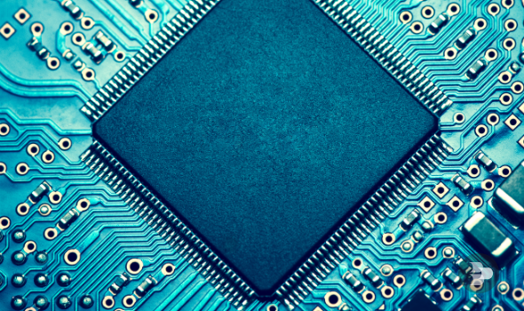

Tecnologia > Inovações
Saiba tudo sobre o processador
por Mariana Pinto e Rafael Maio
Atualizado em 20/01/2017
O que é?
Um processador, também chamado de CPU, é um conjunto de circuitos integrados onde se executam cálculos, tarefas e tratamento de dados, daí a sua velocidade de processamento estar diretamente relacionada com a velocidade com que o computador realiza as tarefas (sendo que a velocidade é medida em GHz – frequência de processamento durante um segundo). É responsável pela execução dos comandos gerados pelo e para o software.
Deste ângulo, conseguimos visualizar os circuitos integrados caraterísticos deste exemplo.
Circuito Integrado ou CI
Inventado por Robert N. Noyce, fundador da empresa INTEL, este tem como objetivo de realizar diferentes funções como cronometrar, oscilar, ampliar e controlar ações mais complexas, que não poderiam ser executadas por um único componente.
Robert N. Noyce, fundador da INTEL (1927-1990).
Primeiramente, os investigadores notaram que ao reduzir as dimensões do CI este teria um desempenho satisfatório. Começou uma nova era, onde o desenvolvimento de um CI em chips levou a que fossem alojados vários CI’s em um só chip. A evolução destes componentes levou ao aparecimento dos primeiros microprocessadores em 1971 e 1972, o microprocessador 4004 de 4 bits e o 8008 de 8bits, respetivamente.
Caraterísticas de um processador
| Constituição | |
| Frequência do Relógio (clock) | Sincroniza a comunicação entre os elementos do hardware |
| Barramento Interno e Externo | Conectam os componentes de um computador à placa mãe e leva sinais para outros componentes do sistema |
| Conjunto de Instruções | O conjunto de instruções foi aumentando consoante o progresso dos aparelhos. |
| Cache de memória | Pequeno banco de memória onde é guardado o conteúdo das últimas posições de memória solicitadas pelo processador |